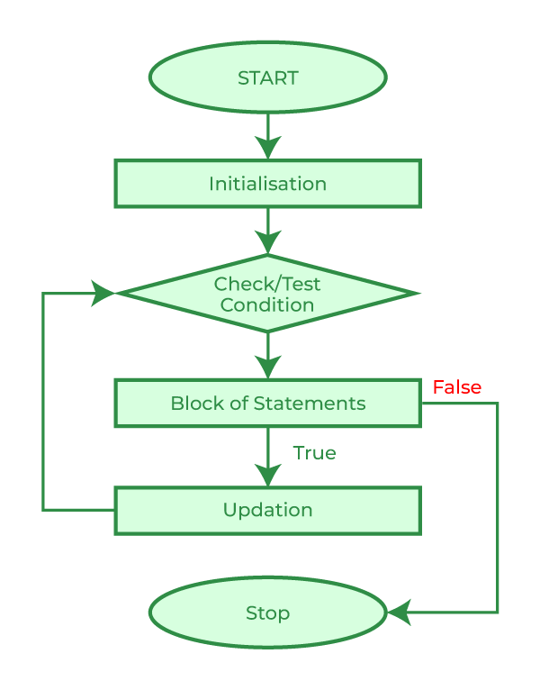

|  |
For loop is used to execute an instruction many times. It is used when you know the number of times that the loop is going to repeat and the foreach is more used for iterating arrays. |
for ($x=0;$x>-10;$x--) { //loop 1
echo $x; //instruction 1
}
$x = [-1, 0, 1]; //instruction 1
foreach ($x as $y => $z) { //loop 1
echo "$y: $z"; //instruction 2
}